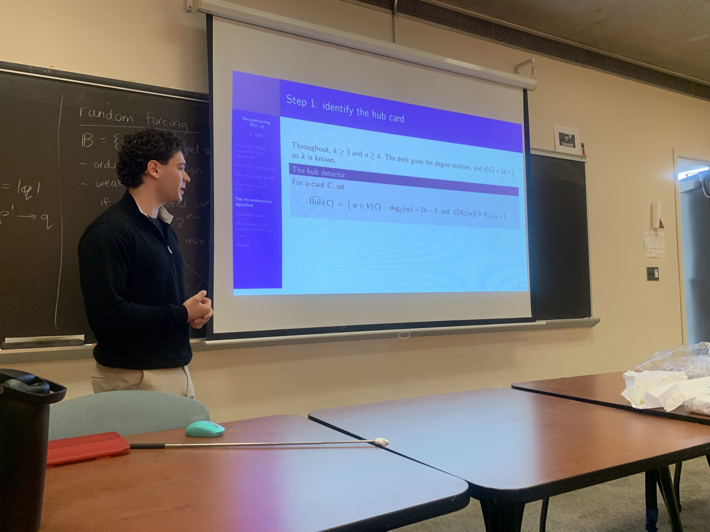

Research
Manuscripts and Presentations
Miller, H. “Reconstruction and the Intersection Number of the Undirected de Bruijn Graph.”Manuscript in preparation for submission.
Invited Speaker, Rutgers DIMACS Graduate Seminar in Combinatorics
Fall 2026Presenter, CIMPA Summer School in Combinatorics and Graph Theory, Costa Rica
Summer 2026Sosa, G.; Miller, H.; and Santo, K. “Strongly Stable Generators of Lexsegment Ideals.”Manuscript in preparation for submission.
Presenter, CIMPA Summer School in Combinatorics and Graph Theory, Costa Rica
Summer 2026

Research Experience
Undergraduate Research Fellow | Colgate University
October 2025–PresentMentor: Professor Sosa-Castillo
Conduct paid research in algebraic graph theory, investigating connections between existing work on reconstructing monomial orders and the graph reconstruction conjecture.
Summer Research Fellow | Colgate University
June–August 2026Completed a paid, faculty-initiated fellowship (40 hours per week), extending academic-year research in algebraic graph theory and pursuing related problems in algebra.
CIMPA School in Combinatorics and Graph Theory
August 2026San José, Costa Rica. Studied graph theory, matroids, symmetric functions, and polytopes; presented research.